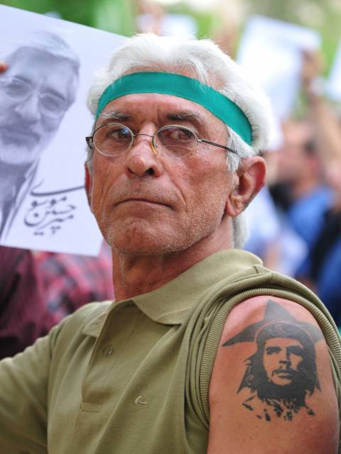

I was raised as a physics student, first and foremost. My first loves were paleontology and astronomy, but I was steered at a young age towards physics being The Way to astronomy. As a young lad, I had dreams of becoming a radio astronomer and studying quasars, ancient protogalaxies far too big for their age, which likely contained supermassive black holes. To this end, I was steered towards becoming a physics student as the most natural path for training into astronomy.
I had never really decided on what I wanted to do after college, but I just continued to study physics as just "what I did". Having completed my bachelors I flitted around in various IT jobs until I decided to pursue high school teaching. Now, after six years of teaching, I have decided yet again to change and go into software development, with web dev as my first stepping stone into this wild world.